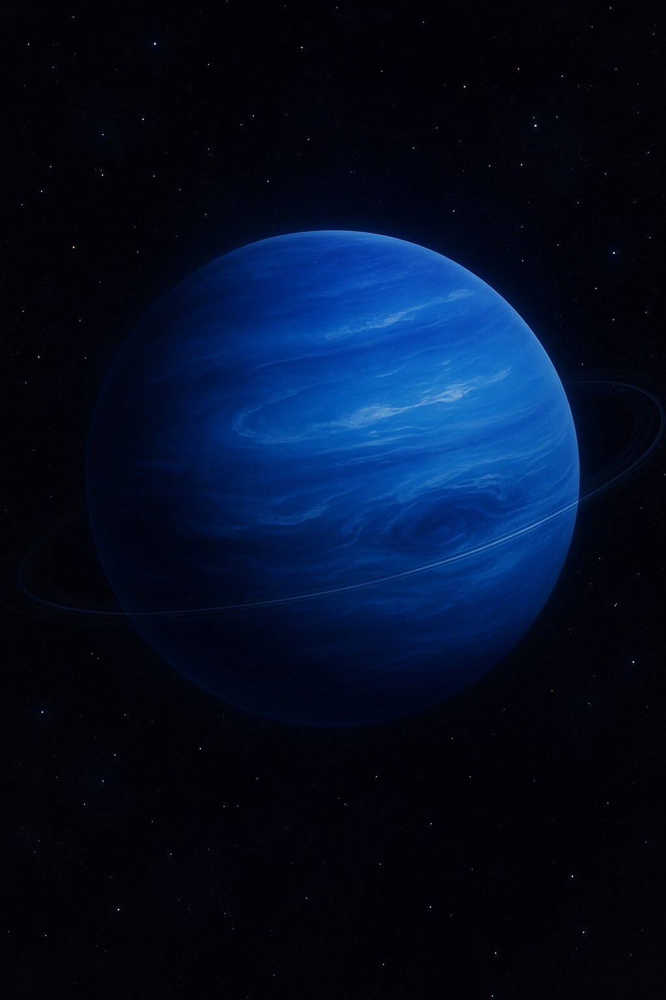
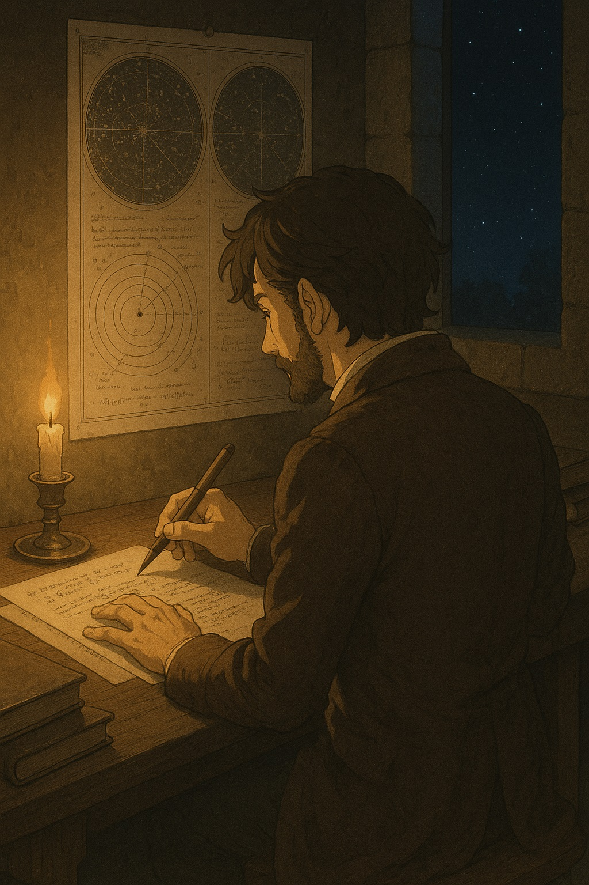
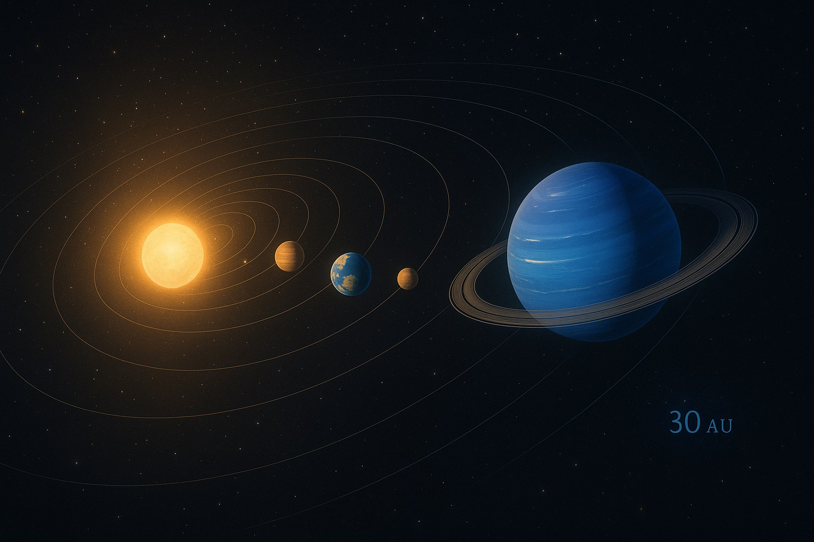
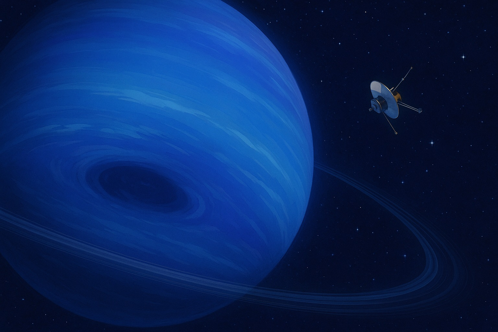
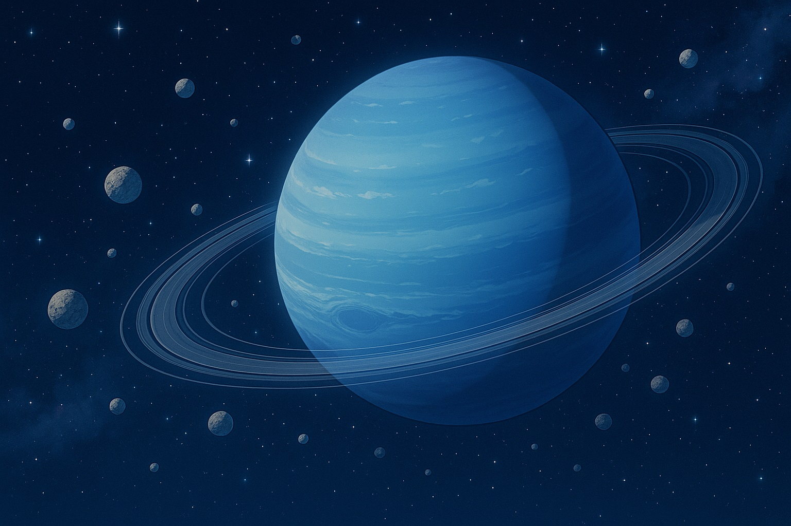
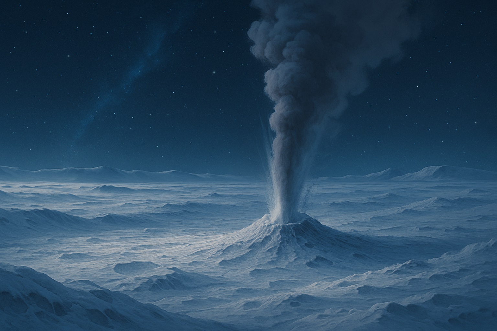
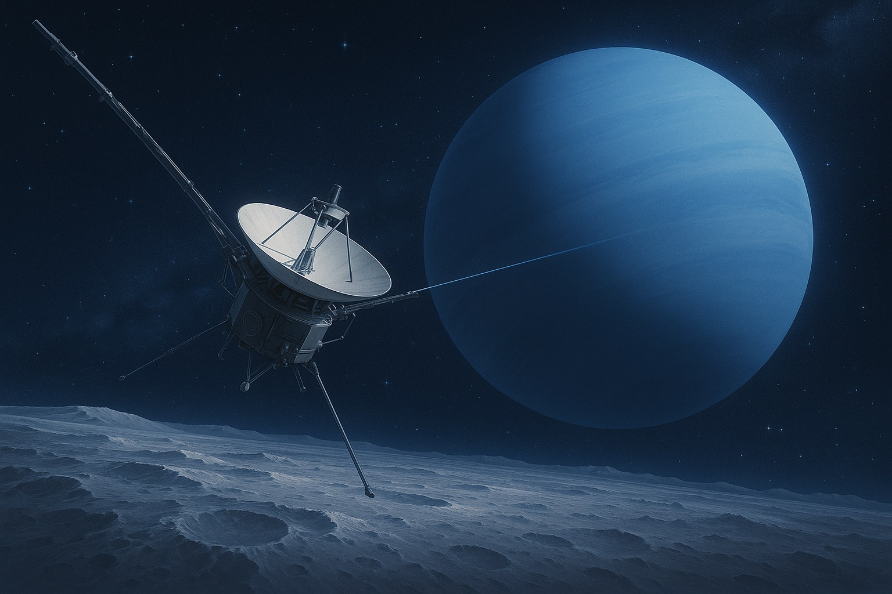

🌊セーラー・ネプチューンと学ぶ、海王星のものがたり
〜深海の青い謎を探る〜

海王星は、宇宙の深海に浮かぶような、美しい青い惑星だよ。
ねえ、エミリー
今日は宇宙のいちばん遠くにある、青くて静かな惑星「**海王星（かいおうせい）**」についてのお話をするね。
海王星は、まるで「**セーラー・ネプチューン**」が守る深海のように、神秘的で、まだたくさんの謎に包まれているんだ。
🔍 発見のものがたり
海王星は、望遠鏡で見つける前に、数学の計算で存在が予測されたんだ。
- 計算から先に発見：天王星の動きのズレから、まだ見つかっていない惑星の存在が予測されたんだ。
- 1846年の発見：計算をもとに探し出され、史上初めて「**計算から発見された**」惑星となったよ。
🌍 太陽系での位置
海王星は、太陽から最も遠い惑星だよ。
- 太陽系最遠の惑星：冥王星が準惑星に分類された今、太陽系で最も遠い惑星が海王星だよ。
- 長い公転周期：太陽から約30天文単位離れており、公転には約**165年**かかるんだ。発見後、初めて太陽を一周したのは2011年だよ。
🌀 不思議な大気と嵐

海王星には、地球よりも大きな嵐の渦があるんだ。
- 大暗斑の発見と消失：1989年のボイジャー2号の接近で「**大暗斑**」という巨大な嵐が見つかったけど、ハッブル宇宙望遠鏡ではその後消滅が確認されたんだ。
- 太陽系最速の強風：秒速**400メートル**もの強風が吹き荒れているよ。これは太陽系で一番の風速なんだ！
- 謎の熱源：太陽から遠いのに活発なのは、内部にかくれた熱源があるためだと考えられているよ。
海の守り神、セーラー・ネプチューン：「深海の潮の満ち引きよ、私に力を！」
ネプチューンの深い青色のように、海王星はまるで宇宙の深海に浮かぶ青い宝石さ。
ネプチューンの深い青色のように、海王星はまるで宇宙の深海に浮かぶ青い宝石さ。
💍 隠れたリングとふしぎな衛星たち

海王星にも、薄くて見えにくいけれど、リングがあるんだ。
- 4本のリング：土星ほどはっきり見えないけれど、海王星にも4本のリングがあるんだ。
- 14個の衛星：これまでに14個の衛星（お月さまのようなもの）が見つかっているよ。
🌠 トリトン：さかさまにまわる不思議な月
海王星の一番大きな月、トリトンは、宇宙でも珍しい動きをするんだ。
- 逆行軌道：一番大きな衛星の**トリトン**は、海王星の自転とは逆向きにまわっている、とても珍しい衛星だよ。
- 捕獲された衛星説：科学者たちは、トリトンはもともと別の場所で生まれ、海王星に後から捕らえられたと考えているんだ。
- 窒素の間欠泉：表面は約−235℃と極寒だけど、窒素の**間欠泉**が吹き出しているんだ。まるで「冷たい火山」みたいだね。
- カンタロープ地形：表面にはマスクメロンのようなでこぼこ模様、「**カンタロープ地形**」が見られるよ。
📡 探査の歴史

海王星を訪れた探査機は、今のところ「ボイジャー2号」だけだよ。
- ボイジャー2号のみ：これまでに海王星に接近した探査機は、たった一つ、**ボイジャー2号**だけなんだ。
- 残された謎：そのため、まだまだわからないことがたくさんある、謎に満ちた惑星なんだよ。
🔭 天王星との共通点
- 氷の巨人：天王星と海王星は「**氷の巨人（氷惑星）**」と呼ばれ、水やメタン、アンモニアなどの氷成分が多いのが特徴だよ。
- 青い輝き：メタンが赤い光を吸収するため、どちらも深い青色に見えるんだ。
- リングとダイヤモンドの雨：二つともリングを持ち、大気中では「**ダイヤモンドの雨**」が降っていると言われているよ…まるで宇宙のファンタジーだね✨
🌌 青い星からのメッセージ
海王星は、遠くて静かなのに、心の奥に熱を秘めているふしぎな星。活発な嵐、逆さまにまわる月、 そして誰も知らない未来の物語がそこにあるかもしれないの。いつか、エミリーもこの青い星に 自分の夢を届けてみてね。
今日の宇宙の神秘 - Astronomy Picture of the Day
コンテンツを読み込み中...